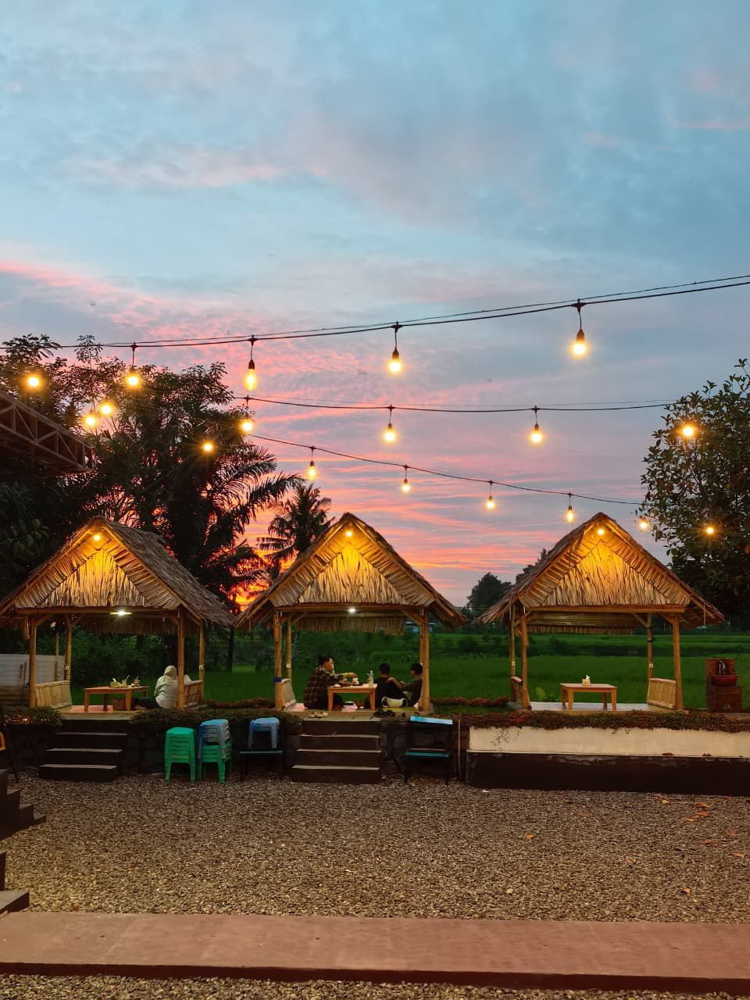
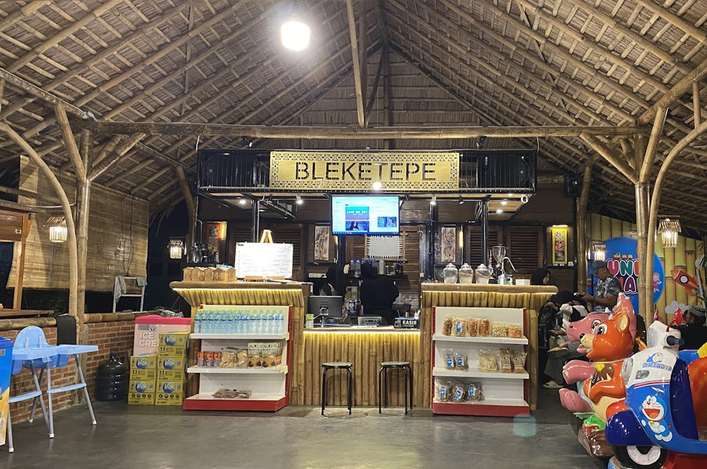

Cita Rasa untuk Kebersamaan
Sajian lezat yang cocok dinikmati bersama keluarga, ditemani suasana alam yang menenangkan dan penuh kehangatan.

Tentang Kami
Warung Bleketepe adalah tempat makan yang pas untuk dinikmati bersama keluarga, dengan hidangan lezat, suasana hangat, dan pemandangan indah yang membuat setiap momen terasa lebih berkesan.

Cita Rasa untuk Kebersamaan
Sajian lezat yang cocok dinikmati bersama keluarga, ditemani suasana alam yang menenangkan dan penuh kehangatan.